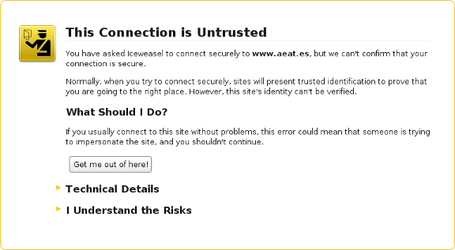

We believe security software like Whonix needs to remain Open Source and independent. Would you help sustain and grow the project? Learn more about our 14 year success story and maybe DONATE!
Whonix-Workstation SecurityDocumentationAdvanced Security Guide IntroductionPrevious page: Whonix-Workstation SecurityIndex page: DocumentationNext page: Advanced Security Guide IntroductionWhonix and Tor Limitations
- Live Mode
 grub-live
grub-live- Whonix on USB
-
Persistent Mode

Things you should know about Whonix and Anonymity in General to stay safe.
Introduction
 Whonix comes with many security
features. Whonix is Kicksecure hardened by default and also provides
extensive Documentation
including a System
Hardening Checklist. The more you know, the safer you can be.
Whonix comes with many security
features. Whonix is Kicksecure hardened by default and also provides
extensive Documentation
including a System
Hardening Checklist. The more you know, the safer you can be.
Whonix developers have done their utmost to provide solid tools which protect online privacy, but no perfect solution exists to the complex anonymity problem. Before deciding whether Whonix is the right platform to use, it is crucial that each individual understands the limitations of the tools offered and how to make best use of them.
This wiki page focuses on anonymity and security threats that Whonix either cannot, or does not, mitigate at present. These issues are for the most part unspecific to Whonix. No other anonymity tool has a solution to all of these issues.
Essential Security Knowledge
You cannot be anonymous without being secure. Whonix is based on Kicksecure.
While Whonix aims to anonymize users and Kicksecure works to improve the security, it is likely that other less secure or outright insecure devices around you could compromise your anonymity. These devices could range from mobile phones and tablets to Smart TVs and smart home gadgets. These devices can spy on you and break your privacy and anonymity. To fully comprehend the scope of potential risks, it is highly recommended to study the documentation provided by Kicksecure™.

Redirection to Kicksecure Documentation
- Introduction: Whonix Documentation Introduction, User Expectations, Footnotes and References, User Expectations - What Documentation Is and What It Is Not
- Whonix is based on Kicksecure™: Whonix is built on top of Kicksecure. This means it uses many of the same security tools, design concepts, and configurations.
- Kicksecure is based on Debian: Kicksecure is developed using Debian as its base. Debian is a widely used, stable, and free Linux operating system.
- Inheritance: As a result, Whonix is also based on Debian.
- Debian is GNU/Linux-based: Debian is built using the GNU/Linux operating system. GNU provides essential tools and Linux is the system's kernel (core).
- Shared documentation benefits: Since each system is based on the one below it, a lot of documentation and guides are shared. This reduces the need to duplicate information.
- Inherited documentation: Most instructions and explanations are inherited from Kicksecure or Debian, unless otherwise specified.
- Shared principles: The systems share similar security goals and setup instructions. In most cases, users can follow Kicksecure documentation when using Whonix.
- Keep using Whonix: This does not mean users should switch to Kicksecure. This page only points to related, helpful information.
- Where to apply the instructions: Follow the instructions inside Whonix unless specifically stated otherwise.
- Wiki editors notice: This information is pulled from a reusable wiki template: upstream_wiki. (See which pages use this.)
- Comparison: Whonix versus Kicksecure
- Documentation compatibility: Because Whonix is based on Kicksecure, you can often follow Kicksecure's instructions as long as you apply them in the right place.
- Summary: Whonix is built on top of Kicksecure, which itself is based on Debian. Debian is a GNU/Linux operating system. This layered design means Whonix inherits many features, tools, and documentation from both Kicksecure and Debian.
- Click here: Visit the related page in the Kicksecure wiki for full documentation and background:
 Warning
Warning
- Note: Re-interpretation...
Apply the instructions inside Whonix, not inside Kicksecure.
Kicksecure: Perform these steps inside Kicksecure.
Instead, apply the steps inside Whonix-Workstation.
Kicksecure for Qubes: Perform these steps inside Qubes
kicksecure-18Template.
Instead, use the whonix-workstation-18 Template for
these steps.
Anonymous Identities
Separation of Different Contextual Identities
It is usually inadvisable to use the same Whonix-Workstation™ to perform more than one task, or when using two (or more) contextual identities that must be kept separate from each other. For example, it is poor operational security to use the same Whonix-Workstation™ to check email via Tor, while simultaneously publishing an anonymous document.
The first reason is that Tor tends to reuse the same circuits during the same browsing session. The Tor exit relay of a circuit knows both the destination server (and possibly the content of the communication if not encrypted) and the address of the previous relay it received the communication from. This makes it easier to infer that several browsing requests which took place on the same circuit are possibly correlated and originate from the same person. Global adversaries described later are in the perfect position to undertake this form of correlation analysis.
Secondly, if Whonix or one of its applications has a security hole or is misused, then information might leak from the Whonix-Workstation. That could reveal that the same person was behind the various activities conducted inside the Whonix-Workstation.
To address both threats, better isolation of new identities is required on every occasion they are used. It is recommended to conduct one activity at a time, and implement one or more of the following solutions: [1]
 Nyx's "New Identity"
button sends the protocol command "signal newnym" to Tor's ControlPort.
A new Tor exit relay and a new IP address is likely, but this is not
guaranteed.
Nyx's "New Identity"
button sends the protocol command "signal newnym" to Tor's ControlPort.
A new Tor exit relay and a new IP address is likely, but this is not
guaranteed.
Using this feature, Tor may only have replaced the middle relay while using the same Tor exit relay. Additionally, "signal newnym" will not interfere with long-lived connections like an IRC connection. Apart from the Tor circuits, other types of information can reveal past activities, for example the cookies stored by the browser. Therefore, this arm feature is not a solution for properly separating contextual identities.
Protection Against Social Engineering
Whonix does not protect against social engineering attacks. These attacks rely on human cognitive biases and trick people into revealing passwords or other sensitive information that allows the compromise of a target system's security. [2]
Other examples of social engineering include convincing someone to send a copy of logs or other information from the Whonix-Gateway™ or host operating system machine. In all cases, after trust has been established between the attacker and the victim, and sufficient information has been gathered, an exploit will be executed to perform harmful actions such as stealing personal or financial information, sabotaging the target's system, deanonymizing the individual and so on. [2]
The best tools in maintaining anonymity are the knowledge that comes from research and experience, and healthy skepticism towards scenarios that pose potential security threats.
Dedicated wiki page: Social Engineering.
Protection Against External Threats or User Mistakes
Obviously, Whonix cannot protect against external threats like people looking over the user's shoulder or gaining physical access to the machine in order to subvert the anonymity features of Tor and Whonix.
Neither can Whonix prevent people from shooting themselves in the foot, leading to inadvertent deanonymization. It is strongly encouraged to read the Tips on Remaining Anonymous page to learn about non-technical steps to stay anonymous when using Tor, Tor Browser and Whonix. This list considers:
- Safe use of social networks.
- (Mobile) phone verification.
- Personal websites and links.
- Accounts previously used without Tor.
- Banking / financial provider accounts.
- Modes of anonymity.
- The risks posed by identifying data and online identities.
- When to use bridges.
- How to protect sensitive data and communications.
- Safe Tor networking considerations.
- The danger of random files and links.
- The difference between anonymity and pseudonymity.
- The danger of mixing clearnet and Tor simultaneously.
- The consequences of changing settings.
- Server connections.
Only Whonix-Workstation is Designed for Anonymous Activity
 All anonymous activity should only take place inside Whonix-Workstation
and nowhere else.
All anonymous activity should only take place inside Whonix-Workstation
and nowhere else.
The host operating system -- the operating system running the virtualizer, and the system which was used before downloading Whonix -- is not "torified". Anonymous tasks should never be performed on the host system.
The Whonix-Gateway is solely designed to run Tor and act as a firewall. Any "anonymous" activities should not be conducted on the Gateway. Further, in most cases there is no need to modify settings on the Whonix-Gateway, except for minor modifications like setting up bridges which is already documented.
Attacks
Man-in-the-middle Attacks
A man-in-the-middle attack (MitM) is a where an attacker makes independent connections with two parties and secretly relays (and potentially alters) messages between them. This is a form of active eavesdropping, since the two parties think they are communicating directly with each other and are unaware the conversation is being controlled by the attacker. [3]
Figure: Illustration of a MitM Attack
While using Tor, MitM attacks can still happen between the exit relay and the destination server. The exit relay itself can also act as a man-in-the-middle. For an example of such an attack see MW-Blog: TOR exit-node doing MITM attacks. It is worth reiterating that protecting against these attacks requires end-to-end encryption and taking extra steps to verify the server's authenticity.
Normally a server's authenticity is automatically verified by the browser using SSL/TLS certificates which are checked against a set of recognized certificate authorities (CAs). If a security exception message appears like the figure below, then this might constitute a MitM attack. The warning should not be bypassed unless there is another trusted way of checking the certificate's fingerprint with the people running the service.
Figure: An Untrusted Connection

Mozilla has an educational resource to help determine if a connection to a website is secure. The Electronic Frontier Foundation (EFF) also has an excellent interactive illustration that provides an overview of HTTP / HTTPS [4] connections with and without Tor, and what information is visible to various third parties.
The Fallible Certificate Authority Model
Unfortunately, the vast majority of Internet encryption relies on the CA model of trust which is susceptible to various methods of compromise. Ultimately, encryption in and of itself does not solve the authentication problem in electronic communications, as seen in the actions of advanced adversaries who have targeted and undermined this central pillar upon which the Internet relies.
For example, Verisign was hacked successfully and repeatedly in 2010, with the likely conclusion being the attackers were able to forge certificates for an unknown number of websites.
A more glaring example was the confirmation by Comodo on March 15, 2011, that a user account with an affiliate registration authority had been compromised. This is a privacy and security disaster since Comodo is a major SSL/TLS company and the breach led to the creation of a new user account that issued nine certificate signing requests for seven domains: mail.google.com, login.live.com, www.google.com, login.yahoo.com (three certificates), login.skype.com, addons.mozilla.org, and global trustee. [5]
Later in 2011, DigiNotar, a Dutch SSL certificate company, incorrectly issued certificates to a malicious party or parties. It later emerged that DigiNotar was apparently compromised months before, or perhaps even in May of 2009, if not earlier. Rogue certificates were issued for multiple domains, including: google.com, mozilla.org, torproject.org, login.yahoo.com and many more. [6]
Considering the frequency of attacks and the passage of time, there is a distinct possibility that a MitM attack might occur even when the browser is trusting a HTTPS connection. [7]
SSL/TLS Alternatives
Depending on your personal circumstances, there are alternatives to SSL/TLS which can be considered. Unfortunately, none of them can be used as a drop-in replacement for SSL/TLS. Tools providing connection security include: Monkeysphere, Convergence, Perspectives Project and Tor onion services. [8]
Using Tor does not magically solve the authentication problem. Tor's distinct advantage is that by providing anonymity, it is more difficult for attackers to perform a MitM attack with a rogue SSL/TLS certificate that is targeted at just one specific individual. However, the disadvantage of Tor is that it is easier for people or organizations running malicious Tor exit relays to perform a large scale MitM attempt. Further, malicious exit nodes could perform attacks targeted at a specific server, and especially those Tor clients who happen to utilize the service.
In all cases, it is advised to use additional message encryption for email, chats and so on. It is unwise to rely on SSL/TLS alone. Relevant tools that may be useful include:
- Encrypted messengers.
- GPG.
- KGpg.
- Mozilla Thunderbird for anonymous, encrypted email.
Tor Network Attacks
Tor is not invulnerable to attacks. Several techniques are already used for deanonymization and Whonix users can be similarly affected -- some of these attacks are described in further detail below. Interested readers can also refer to the Speculative Tor Attacks entry for a more comprehensive list of potential attacks against the Tor client, servers and/or network.
Confirmation Attacks
A confirmation attack targets the broader Tor network itself, usually via multiple malicious Tor nodes. In this instance, the adversary controls or observes relays at both ends of the Tor circuit (the guard and exit relays). Comparisons are made of traffic timing, volume and other characteristics to confirm the relays share the same circuit. Since the first entry guard knows the user's IP, and the last exit relay knows the destination/resource accessed (like a webpage), this leads to deanonymization. [10]
In a 2009 blog post, The Tor Project described this threat of deanonymization under specific conditions:
The Tor design doesn't try to protect against an attacker who can see or measure both traffic going into the Tor network and also traffic coming out of the Tor network. That's because if you can see both flows, some simple statistics let you decide whether they match up.
That could also be the case if your ISP (or your local network administrator) and the ISP of the destination server (or the destination server itself) cooperate to attack you.
Tor tries to protect against traffic analysis, where an attacker tries to learn whom to investigate, but Tor can't protect against traffic confirmation (also known as end-to-end correlation), where an attacker tries to confirm a hypothesis by monitoring the right locations in the network and then doing the math.
Traffic Analysis
Adversaries conducting traffic analysis are able to discover a varying amount of user information, depending on the position(s) they are occupying in the network. The following observations reveal various information, in increasing order: [11]
- Observing the client-to-guard-node network path.
- Controlling the guard relay, as individual circuits can be examined.
- Observing the paths to the guard relay and from the Tor exit relay.
- Controlling the guard and exit relays (or client guard and onion service guard).
- Controlling both ends of the communication, and able to inject and manipulate traffic patterns.
Notably, The Tor Project has recently highlighted research that has identified a number of new, low cost, website traffic (fingerprinting) analysis attacks and potential mitigations; see Website Oracles for further information.
Guard Discovery
Advanced adversaries are capable of identifying the guard node(s) in use by an onion service or Tor client. Many connections are made to the onion service, forcing it to create multiple circuits until one of the adversary's nodes is chosen as the middle relay (next to the guard). A traffic analysis side channel then confirms the relay is next to the onion service, confirming the identity of the service's guard node. The guard node is then compromised, forced or surveilled to discover the actual IP address of the onion service or client. [11]
Tor Defenses
Tor has implemented some defenses against limited adversaries that can gather traffic statistics from Internet routers along the path to the guard node, and is planning defenses against website traffic fingerprinting by guard node adversaries. However, a number of other attacks remain viable at present such as end-to-end correlation attacks, alternate guard node exploits, circuit fingerprinting attacks and so on.
Documents
Document Encryption
As with any operating system (OS), if documents are
saved inside Whonix, they will not be encrypted by default. This is why
it is recommended to apply
 <u>F</u>ull <u>D</u>isk
<u>E</u>ncryption (FDE) on the host OS to protect sensitive
data.
<u>F</u>ull <u>D</u>isk
<u>E</u>ncryption (FDE) on the host OS to protect sensitive
data.
Documents created may also have specific file signatures that reveal use of the platform. See also Surfing Posting Blogging and Metadata.
Document Metadata
Numerous file formats store hidden data or metadata inside of the files. For example, text processors or PDF files could store the author's name, the date and time of file creation, and sometimes even parts of the file's editing history. The extent of hidden data depends on the file format and the software that is used.
Image file formats like TIFF and JPEG are some of the worst offenders. For instance, when these files are created by digital cameras or mobile phones, they contain a metadata format called Exif whose defined tags can include:
- Date and time information.
- Occasionally GPS coordinates of the picture.
- Camera settings: camera model and make (including the serial number), orientation (rotation), aperture, shutter speed, focal length, metering mode and ISO speed information.
- A thumbnail for previewing the picture in file managers, on camera, or in photo editing software. Image processing software tend to keep Exif data intact.
- Descriptions.
- Copyright information.
Notably, the Internet is full of cropped or blurred images where the Exif thumbnail still contains the full original picture. Specialist software is often required to remove Exif tags before safely publishing images. [12]
Be aware that Whonix does not clear file metadata automatically. However, Whonix comes bundled with MAT2 -- the Metadata Anonymisation Toolkit v2 -- as part of the design goal to help protect users.
Fingerprinting
Stylometry
Coding Style
Recent research has revealed that coders have a unique fingerprint similar to linguistic expressions. Machine learning techniques are capable of de-anonymizing code samples, using "abstract syntax trees" that analyze the underlying structure. For instance, a 2017 study found that GitHub coders could be identified with 99 per cent accuracy based on small and incomplete source code fragments. To date, attempts to obfuscate coding style have failed.
The implication is that "anonymous" developers of open-source projects might be identified by prior non-anonymous code contributions. It is likely that advanced adversaries will use this capability to target and de-anonymize developers of popular anonymity and censorship circumvention tools.
Linguistic Style
 Tip: The warning below equally applies to regular
Whonix wiki contributors and forum participants. [13]
Tip: The warning below equally applies to regular
Whonix wiki contributors and forum participants. [13]
Whonix does not obfuscate an individual's writing style, which is easily fingerprinted based on syntax and other grammatical idiosyncrasies. Unless precautions are taken, stylometric analysis based on linguistic characteristics is a credible threat. Research suggests only a few thousand words (or less) may be enough to positively identify an author, and there are a host of software tools available to conduct this analysis.
Whonix Signature
Developers have designed Whonix to be indistinguishable from standard use of the Tor network. However, there may be unknown fingerprinting methods available to ISPs and other network adversaries which identify Whonix users. If this is a legitimate concern, then investigate optional configurations which can hide Tor / Whonix use from the ISP.
Platform Security
Password Strength
Tor promotes online anonymity, while Whonix automatically forces desktop-wide activities through Tor (along with many extra security features). However, neither Tor or Whonix are one-click solutions for impregnable security or absolute anonymity.
If weak passwords (passphrases) are used they can be easily determined by brute-force attacks, whether or not Whonix is installed. In essence, attackers systematically try all passwords until the correct one is found, or attempt to guess the key which is created from the password using a key derivation function (an exhaustive key search). This method is very fast for short and/or non-random passwords.
For greater security it is recommended to generate strong and unique Diceware passwords and follow other recommendations concerning safe habits, password generation and storage.
Compromised Hardware or Advanced Malware
Virtualizers like Qubes, VirtualBox and KVM cannot absolutely prevent the compromise of hardware, nor detect advanced malware. Running all activities inside VMs is a very reasonable approach. However, this only raises the bar and makes it more difficult and/or expensive to compromise the whole system. It is by no means a perfect solution. As one Google Project Zero researcher noted recently when demonstrating a VM escape in KVM: [14]
The bug and its exploit still serve as a demonstration that highly exploitable security vulnerabilities can still exist in the very core of a virtualization engine, which is almost certainly a small and well audited codebase. While the attack surface of a hypervisor such as KVM is relatively small from a pure LoC perspective, its low level nature, close interaction with hardware and pure complexity makes it very hard to avoid security-critical bugs.
While we have not seen any in-the-wild exploits targeting hypervisors outside of competitions like Pwn2Own, these capabilities are clearly achievable for a well-financed adversary. I've spent around two months on this research, working as an individual with only remote access to an AMD system. Looking at the potential ROI on an exploit like this, it seems safe to assume that more people are working on similar issues right now and that vulnerabilities in KVM, Hyper-V, Xen or VMware will be exploited in-the-wild sooner or later.
Whonix cannot provide protection if the system's trusted computing base has been compromised by:
- Physical access and the installation of untrusted pieces of hardware (like a keylogger);
- Firmware Trojans (including BIOS/UEFI attacks); or
- Malware.
If the host system is affected by malware, firmware trojans or malicious hardware components, then every Whonix virtual machine, Tor process and communication thought to be anonymous is similarly compromised.
In the event a system compromise is strongly suspected or confirmed, the ultimate goal is to re-establish a trusted, private environment for future activities -- see Compromise Recovery for techniques to recover from host and/or Whonix VM infections.
Host Security
The security of the Whonix platform is itself reliant upon the security of the host. Naturally, a majority are likely to run Whonix on top of the every day operating system without making any additional changes. However, safety is materially improved by using a dedicated host operating system solely for Whonix VMs. For better security, this system should be configured on a computer bought solely for Whonix activities, and which has never been used before.
There are a number of recommendations relevant to host OS security in the following Documentation sections:
- Basic Security Guide.
- Advanced Security Guide.
- Computer Security Education.
The System Hardening Checklist also provides a quick and handy reference guide for specific areas of interest.
Tor
Exit Relays can Eavesdrop on Communications
 The Tor network hides an individual's location, but it does not
automatically encrypt communications.
The Tor network hides an individual's location, but it does not
automatically encrypt communications.
Instead of taking a direct route from source to destination, communications using the Tor network take a random pathway through several Tor relays to help cover the user's tracks. This means observers at any single point cannot tell both where the data came from and where it is going.
Figure: How Tor Works [15]

The last relay on the three-hop circuit is called the Tor exit relay. It is the critical relay that establishes the actual connection to the destination server. By design, Tor does not encrypt the traffic between a Tor exit relay and the final destination. This means any exit relay is in a position to capture any traffic passing through it. To protect against snooping by the Tor exit relay, end-to-end encryption should always be used. [16]
Malicious exit nodes have previously been used to spy on sensitive communications. For example, in 2007, a security researcher monitored the connections coming out of an exit relay under their control and intercepted thousands of private e-mail messages sent by foreign embassies and human rights groups around the world..
While browsing, sending email or chatting online, it is recommended to utilize the necessary tools bundled with Whonix to enforce strong encryption. Refer to the Documentation for necessary steps to remain safe. [17]
Use of Tor is Obvious
Tor tries to prevent attackers from learning what destination websites are being connected to.
Both the ISP and a local network administrator can easily check if connections are made to a Tor relay and not a normal web server. To learn more about whether it is possible to hide Tor network activity, see: Hide Tor use from the Internet Service Provider.
The destination server contacted through Tor can learn whether the communication originates from a Tor exit relay by consulting the publicly available list of known exit relays. For example, The Tor Project Tor Bulk Exit List tool could be used for this purpose.
Based on this information, Whonix users will not appear to be a random Internet user is used to prevent the telltale signs of Tor use. The strong anonymity provided by Tor and Whonix is based on trying to make everyone look exactly the same, so it is not possible to identify a specific individual in the larger user pool.
Ultimately, stronger protection requires a social approach; the larger the pool of Tor users (in close proximity) and the more diverse their interests, the less likely it will be that a specific individual can be identified. Convincing others to use Tor will help the larger anonymity-minded community. [18]
Persistent Guard Relays can Enable Physical Location Tracking
What are Tor Entry Guards? If this is an unfamiliar term, please press on Expand on the right.
Current practical, low-latency, anonymity designs like Tor fail when the attacker can see both ends of the communication channel. For example, suppose the attacker controls or watches the Tor relay a user chooses to enter the network, and also controls or watches the website visited. In this case, the research community is unaware of any practical, low-latency design that can reliably prevent the attacker from correlating volume and timing information on both ends.
Mitigating this threat requires consideration of the Tor network topology. Suppose the attacker controls, or can observe, C relays from a pool of N total relays. If a user selects a new entry and exit relay each time the Tor network is used, the attacker can correlate all traffic sent with a probability of (c/n)2. For most users, profiling is as hazardous as being traced all the time. Simply put, users want to repeat activities without the attacker noticing, but being noticed once by the attacker is as detrimental as being noticed more frequently. [...]
The solution to this problem is "entry guards". Each Tor client selects a few relays at random to use as entry points, and only uses those relays for the first hop. If those relays are not controlled or observed, the attacker can't use end-to-end techniques and the user is secure. If those relays are observed or controlled by the attacker, then they see a larger fraction of the user's traffic -- but still the user is no more profiled than before. Thus, entry guards increase the user's chance of avoiding profiling (on the order of (n-c)/n), compared to the former case.
You can read more at An Analysis of the Degradation of Anonymous Protocols, Defending Anonymous Communication Against Passive Logging Attacks, and especially Locating Hidden Servers.
Restricting entry nodes may also help to defend against attackers who want to run a few Tor nodes and easily enumerate all of the Tor user IP addresses. [19] However, this feature won't become really useful until Tor moves to a "directory guard" design as well.
Source and License, see footnote: [20]
Many well known enhanced anonymity designs such as Tor, Whonix and the Tor Browser (TB) use persistent Tor guards. This decision is attributable to community-based research which demonstrates that persistent Tor entry guards benefit security and lower the probability of an adversary profiling a user. [21]
 Note: Guard fingerprinting techniques are similar to
methods that track users via MAC addresses. If this is a realistic
threat, then MAC address randomization is also recommended.
Note: Guard fingerprinting techniques are similar to
methods that track users via MAC addresses. If this is a realistic
threat, then MAC address randomization is also recommended.
In general, users should not interfere with Tor guard persistence or the natural rotation of entry guards every few months. At the time of writing, the Tor client selects one guard node, but previously used a three-guard design. Guards have a primary lifetime of 120 days. [22] [23] [24]
 Warning: In some situations it is safer to not use the
usual guard relay!
Warning: In some situations it is safer to not use the
usual guard relay!
Guard Fingerprinting
While natural guard rotation is recommended, there are some corner cases in which an adversary could fingerprint the entry guards [25] and de-anonymize a user. For instance:
- The same entry guards are used across various physical locations and access points.
- The same entry guards are used after permanently moving to a different physical location.
For details on how this is possible, press Expand on the right.
Consider the following scenario. A user connects to Tor via a laptop at their home address. An advanced adversary has observed the client-to-guard-node network path to discover the user's entry point to the Tor network.
Soon afterwards, the same user attends a prominent event or protest in a nearby city. At that location, the user decides to anonymously blog about what transpired using the same laptop. This is problematic for anonymity, as the Tor client is using the same entry guard normally correlated with the user's home address.
To understand the potential threat, consider the following:
- There are only around 4,000 Tor guards in 2021. [26]
- By design, Tor is picking one primary guard and using it for a few months. Since the Tor user base is relatively small, it is possible that a guard might only be used by one person in an entire region.
- As the IP address of Tor entry guards is static and Tor network traffic is easily distinguishable, this information becomes public knowledge.
- It is feasible that if a user-guard relationship is unique in a city location, and that user moves, it is likely (but not certain) that there was a location change.
- At the event, the user might be the only one using Tor (or among a handful).
- If the user posts about the event and an adversary who is passively monitoring network traffic conducts the same successful observation of the client-to-guard network path, then it's likely the "anonymous" posts will be linked with the same person who normally connects to that guard at home.
The relative uncommonness of Tor usage simply exacerbates the potential for de-anonymization.
There are several ways to mitigate the risk of guard fingerprinting across different physical locations. In most cases, the original entry guards can also be re-established after returning home:
- Clone Whonix-Gateway™ (sys-whonix) with New Entry Guards.
- Regenerate the Tor State File after Saving the Current Tor State.
- Configure Tor to use Alternating Bridges.
- If moving to a new location permanently, create Fresh Tor Entry Guards by Regenerating the Tor State File.
Forum discussion:
https://forums.whonix.org/t/persistent-tor-entry-guard-relays-can-make-you-trackable-across-different-physical-locations/2090
For more information, see the advanced topic Configure Non-Persistent Entry Guards.
Tor cannot Protect Against a Global Adversary
A global, passive adversary is defined as a person or entity who is able to monitor the traffic between all the computers in a network at the same time. By studying the timing and volume patterns of the different communications across the network, it is statistically feasible to identify Tor circuits and thus match Tor clients with destination servers.
In order to create a low-latency communication service which is usable for web browsing, Internet chat or SSH connections, The Tor Project has made a security trade-off and has not attempted to address this threat.
For more expert information on this topic, see Tor Project: The Second-Generation Onion Router, part 3. Design goals and assumptions.
Whonix Persistence vs Live vs Amnesic
Traces of software installations, files or other user activities depend on whether or not the user is using a live operating system or Live Mode.
A Live Operating System or Live Mode is not Configured
- A) persistent mode:
If any software is downloaded or used on a computer, local traces of the download, installation and use will be left on the device's mass storage device (hard drive, HDD, SSD). This normal mode of operation is referred to as "persistent mode" since any files downloaded, documents created and so on will persist after reboot.
Any created files still exist after the computer is powered-off or rebooted, unless steps are taken to securely wipe the files or otherwise remove all signs of their existence. Unless Live Mode is used, there are no preventative measures to limit what is written to disk. This can lead to evidence of activity in created files, backup files, temporary files, swap, chat history, browser history and so on.
It is likely most Whonix users are utilizing persistent mode. For this reason it is recommended to use multiple VM Snapshots and to apply Full Disk Encryption on the host. A higher level of security is afforded by encrypting everything, including data, system and swap partitions.
- B) Live Mode inside a VM:
This is useful to stop persistent malware as well as for testing. Be aware that although Live Mode inside Non-Qubes-Whonix virtual machines (VMs) make writes go to RAM instead of the HDD/SSD, traces of activity may be left in swap files, core dumps or via other configurations on the host operating system (OS). If this is a risk in your circumstances, refer to Anti-Forensics Precautions or preferably utilize Live Mode on the host OS. [27] [28]
- C) Live Mode inside on the host OS:
Without the disadvantages mentioned above. See Live Mode.
A Live Operating System or Live Mode is Configured
Refer to the Live Mode chapter for further details.
Live DVD / USB
To install Whonix on a USB, see: Whonix on USB.
At the time of writing Whonix does not offer a Live DVD / USB. This situation may change in the future, see: Whonix-Host.
Whonix Development
Missing Whonix Features
Whonix is currently alpha quality software and missing some features, including those relating to security. While many issues listed below are planned for future implementation, a number will probably never get "fixed" because they are impossible to address in a software-only project.
Category |
Missing Feature or Capability |
|---|---|
Adversaries |
Protect against global network adversaries. |
AppArmor |
Apply AppArmor profiles for every process or application. [29] |
Backdoors |
Protect against hardware or software backdoors. |
Encryption |
Encrypt a user's data, documents, files and so on. |
Hardening |
Use all the possible hardening options like full PIE and grsecurity. |
Local Adversaries |
Protect against local adversaries who could mount cold boot and evil maid attacks, or otherwise compromise a user's physical machine. |
MAC Address |
Automatically protect against MAC address fingerprinting on public networks. |
Passwords |
Make weak passwords stronger. |
RAM |
|
Security Updates |
Automatically apply security updates. This was a conscious developer decision because automated updates also come with their own set of security problems. However, whonixcheck provides notifications about updates on Whonix-Workstation. |
Software Attacks |
Protect against highly skilled software attacks, unless physical isolation or Qubes-Whonix is utilized. |
Stylometry |
Obfuscate an individual's linguistic style to defeat stylometric analysis. |
Tor |
|
User Behavior |
Protect those who: fail to read the Documentation, engage in unsafe behaviors, or change default settings without knowing the implications. |
Whonix Builds |
Have deterministic builds, see Dev/Archived Discussions. [31] |
This list is likely incomplete. It is strongly encouraged to read the rest of the Documentation and perhaps the Design chapter to have a full overview of Whonix security, including the list of supported and unsupported features.
Contributors who want to help improve Whonix security should join the discussions on Dev/Archived Discussions, or on the developer mailing list.
Whonix is a Work in Progress
Whonix, as well as all the software it includes, are under continuous development and might contain programming errors or security holes -- Stay Tuned to Whonix development, and do not rely on the platform for strong anonymity.
That said, Whonix has a strong foundational design since it uses both the Isolating Proxy and Transparent Proxy concepts. Since Whonix was founded in 2012, no anonymity leaks or proxy bypass problems have yet been discovered. Whonix has been developed with great care, but it is impossible to ever prove that it is absolutely "leak-proof" or free of mistakes that degrade the goals of the extended project description.
Basic functionality is built-in and Whonix can be used to browse the web and host onion services, use email, IRC, SSH, and a host of other activities. Development is ongoing and more features are continually being added. Contributors who want to join the development process are most welcome; see Patches are Welcome. A complete list of open issues is available on the Whonix issues tracker.
See also: Whonix Protection Against Real World Attacks, Security Reviews and Feedback and Security Overview.
Unsubstantiated Conclusions
Users must be careful not to draw incorrect conclusions based on the existence of specific Whonix communication channels, community software utilized, applications installed on the platform, or the availability of certain wiki entries. Whonix tries to use concise language so that users are not misled into believing anything has been implied. Despite this effort, users will sometimes draw false conclusions in an unintended way. Consider the following hypothetical discussion.
Developer: Donations to Whonix are possible via Bitcoin.
Whonix user: Since you are knowledgeable about Bitcoin, can you also accept Monero donations?
In this case the hypothetical developer did not state "I am knowledgeable about Bitcoin", but rather concisely stated "Donations to Whonix are possible via Bitcoin." The conclusion drawn by the user "Since you are knowledgeable about Bitcoin" might be totally unsubstantiated.
In a similar fashion, just because Whonix does something -- like providing a telegram channel -- it does not follow that Whonix endorses it; see also Terms of Service: Non-endorsement. A list of further examples is outlined below.
Fact [32] |
False Conclusion [33] |
More Information |
|---|---|---|
Whonix provides a Bitcoin (BTC) donation address. |
Bitcoin is anonymous. |
|
Whonix provides a Monero (XMR) donation address. |
Monero is perfect. |
|
The Whonix website is using popular web applications (web apps) like MediaWiki, Phabricator and Discourse (forum software). |
These are perfectly "secure" (for whatever purpose, threat model) web apps. |
In an ideal world, better web apps would be used but this is not possible due to finite Whonix resources. To learn more, see: Privacy on the Whonix Website. |
Whonix provides downloadable VirtualBox builds. |
VirtualBox is secure. |
|
Whonix is available for Windows hosts. |
Windows is a suitable host. |
Windows Hosts pose numerous security and privacy threats. |
Whonix is installable on macOS hosts. |
macOS is a suitable host. |
macOS Hosts pose numerous security and privacy threats. |
Whonix is Freedom Software. |
Whonix is a Freedom Software 'maximalist' project. |
See also: |
Whonix provides a telegram channel support channel. |
Telegram is a perfect, privacy-respecting, secure messenger. |
See footnote. [34] |
There is an twitter profile (xcancel). |
Twitter is a safe platform to utilize. |
|
whonix.org has a public forum. |
The whonix.org forum and associated comments are intended to promote free speech. |
Unfortunately, running a free speech platform is a full-time job and would constitute a separate project in itself. This is simply not possible as a side project. For further details, see: Limitations on Free Speech on Whonix Website and Whonix Chat. |
Whonix is Open Source. |
Whonix must/should implement all ideas from the community. |
It is also recommended to consult the following resources:
- list of forum posts regarding the Whonix project philosophy;
-
Linux User Experience versus Commercial Operating Systems; and
- the underpinning Rationale for this chapter.
On top of unsubstantiated conclusions it also happens that adherence to "perfectly moral" behavior or an approved ™ set of political/ideological beliefs is expected from the Whonix project. However, what counts as "perfectly moral" and the path of attaining therein will always be subjective and disputed among proponents. Such demands include "don't allow running Whonix on Windows hosts", "don't have a twitter project account", "don't accept Bitcoin donation", "don't use centralized services such as telegram", "don't document X, because of Y". Those disagreeing with our methods and philosophy are welcome to exercise their right to software fork the project under the respective licenses.
Footnotes
- Depending on personal circumstances and the Whonix platform in use.
- https://www.sans.org/white-papers/529/
- https://en.wikipedia.org/wiki/Man-in-the-middle_attack
- HTTPS here refers to encrypted connections, whether it is (inferior) SSL or TLS.
- Source: Comodo: The Recent RA Compromise
- Source: The Tor Project: The DigiNotar Debacle, and what you should do about it
- This is one reason why self-authenticating onion services (.onion) connections are superior to HTTPS, because they do not rely on the flawed CA system for confirmation of the destination server.
- Onion Services are automatically encrypted end-to-end. More specifically, connections remain within the Tor network at all times.
- Quoted from wikipedia Man-in-the-middle_attack and Tor Project: Detecting Certificate Authority compromises and web browser collusion.
- https://blog.torproject.org/tor-security-advisory-relay-early-traffic-confirmation-attack
- https://blog.torproject.org/tors-open-research-topics-2018-edition
- For example, the XKeyscore program is actively targeting Exif information for collection.
- Who should also prefer v3 onion connections to Whonix infrastructure whenever possible.
- https://googleprojectzero.blogspot.com/2021/06/an-epyc-escape-case-study-of-kvm.html
- Source: Tor: Overview License: Creative Commons Attribution 3.0 United States License
- For example, a HTTPS or onion service (.onion) connection.
- Source: Tor FAQ: Can exit relays eavesdrop on communications?
- Attribution: Two sentences in this chapter have been forked from the Tor website, which was licensed under a Creative Commons Attribution 3.0 United States License at the time of writing.
- Even though the attacker can't discover the user's destinations in the network, they still might target a list of known Tor users.
- Source:
torproject.org What are Entry Guards?
license:
Content on this site is Copyright The Tor Project, Inc.. Reproduction of content is permitted under a Creative Commons Attribution 3.0 United States License. All use under such license must be accompanied by a clear and prominent attribution that identifies The Tor Project, Inc. as the owner and originator of such content. The Tor Project Inc. reserves the right to change licenses and permissions at any time in its sole discretion. - The risk of guard fingerprinting is less severe now that upstream (The Tor Project) has changed its guard parameters to decrease the de-anonymization risk.
- Prop 291 indicates a 3.5 month guard rotation.
- The Tor Project is currently considering shifting to two guards per client for better anonymity, instead of having one primary guard in use.
- https://github.com/torproject/torspec/blob/master/proposals/291-two-guard-nodes.txt
- The entropy associated with one, two or three guards is 9, 17 and 25 bits, respectively.
- https://metrics.torproject.org/relayflags.html
- Unix-like operating systems also swap (move) memory pages between host RAM and the host disk, and this behavior cannot be prevented in Whonix VMs. The danger is data leakage might occur and an unencrypted swap partition could reveal interesting data to an attacker or be used to store unencrypted copies of files in /tmp for later retrieval.
- https://www.linuxtopia.org/online_books/linux_administrators_security_guide/06_Linux_File_System_and_File_Security.html
- Although a full system MAC policy is currently in development, see here for further details.
- Tails feature request - erase video memory on shutdown
- Although Tor now has deterministic builds, see Bug 3688.
- Things that were really stated.
- Things which were not said or implied.
- Some criticisms of Telegram. * New releases are squished into a single commit, see: one commit. * It is impossible to sign up without a phone number. * There are other concerns, but they are irrelevant for illustrating the point being made here.
License
Whonix Warning wiki page Copyright (C) Amnesia
Whonix Warning wiki page Copyright (C) 2012 - 2026 ENCRYPTED SUPPORT LLC <adrelanos(at)whonix.org(Replace(at)with@.)Please DO NOT use e-mail for one of the following reasons:Private Contact: Please avoid e-mail whenever possible. (Private Communications Policy)User Support Questions: No. (See Support.)Leaks Submissions: No. (No Leaks Policy)Sponsored posts: No.Paid links: No.SEO reviews: No.Advertisement deals: No.Default application installation: No. (Default Application Policy)>This program comes with ABSOLUTELY NO WARRANTY; for details see the wiki source code.
This is free software, and you are welcome to redistribute it under certain conditions; see the wiki source code for details.
Categories: Documentation